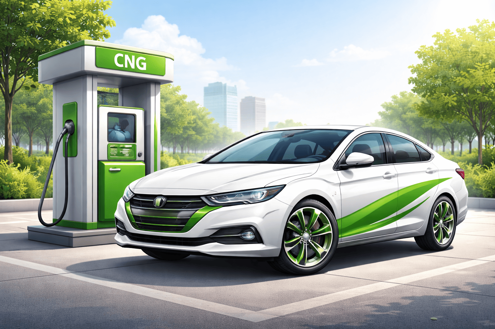

Definition of CNG
Compressed Natural Gas (CNG) is a fuel made by compressing natural gas to less than 1% of its volume. It is used as an alternative to petrol and diesel.
How It Works
CNG is stored in high-pressure cylinders and used to power engines. Vehicles can switch between petrol and CNG seamlessly.

Vehicle Conversion
Cars can be converted using a CNG kit that includes cylinders, regulators, and injectors installed by certified technicians.
Why It Matters
CNG reduces fuel costs, lowers emissions, and helps Nigeria utilize its natural gas resources effectively.
Real-Life Example
A commercial driver in Abuja switching to CNG can reduce fuel expenses by up to 40–60% monthly, increasing profit and sustainability.